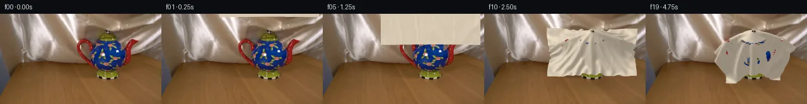

![首帧]()

Round 00
2026-11-05T17:09:30.746311+00:00像素候选变化代码 +186/−0inspection 更新
pixels 61ffc1360c242254 · code 4211a375e841e70d
查看本轮 generate.py 真实 diff
--- previous/generate.py
+++ current/generate.py
@@ -0,0 +1,186 @@
+"""Local mass-spring silk simulation and CPU triangle rasterization."""
+from pathlib import Path
+import numpy as np
+from PIL import Image, ImageDraw
+from scipy.ndimage import gaussian_filter, map_coordinates
+import cv2
+from artifact_io import save
+
+ROOT=Path(__file__).resolve().parent
+SOURCE=np.asarray(Image.open(ROOT/'first_frame.png').convert('RGB'))
+W,H,S=256,144,3
+N=61
+u,v=np.meshgrid(np.linspace(-1,1,N),np.linspace(-1,1,N))
+# World units project to image pixels. Camera looks down 35 degrees.
+C,SN=.82,.573
+CX,FLOOR=171.,97.
+points=np.stack([79*u,75*v,178.+.6*np.sin(2.2*u+1.5*v)],-1).reshape(-1,3)
+vel=np.zeros_like(points);vel[:,2]=-55
+ids=np.arange(N*N).reshape(N,N)
+constraints=[]
+for gap,stiff in [(1,1.),(2,.16)]:
+ for axis in (0,1):
+ for phase in range(2*gap):
+ if axis==0:
+ a=ids[phase:N-gap:2*gap,:].ravel();b=ids[phase+gap:N:2*gap,:].ravel()
+ else:
+ a=ids[:,phase:N-gap:2*gap].ravel();b=ids[:,phase+gap:N:2*gap].ravel()
+ if len(a):constraints.append((a,b,np.linalg.norm(points[a]-points[b],axis=1),stiff))
+for orient in (1,-1):
+ for rowphase in (0,1):
+ for colphase in (0,1):
+ rr=np.arange(rowphase,N-1,2);cc=np.arange(colphase,N-1,2)
+ r,c=np.meshgrid(rr,cc,indexing='ij')
+ if orient==1:a=ids[r,c].ravel();b=ids[r+1,c+1].ravel()
+ else:a=ids[r,c+1].ravel();b=ids[r+1,c].ravel()
+ constraints.append((a,b,np.linalg.norm(points[a]-points[b],axis=1),.8))
+
+# Opaque collision envelopes of the stationary photographed teapot.
+shapes=[((0,0,39),(28,24,30)),((0,0,72),(21,19,5)),((0,0,81.5),(4,4,5)),
+ ((0,0,4),(18,17,5)),((-34,0,46),(15,5,24))]
+for f in np.linspace(0,1,10):
+ shapes.append(((28+17*f,0,35+32*f),(6-3*f,5-2*f,7-3*f)))
+shapes=[(np.array(a,dtype=float),np.array(b,dtype=float)+.9) for a,b in shapes]
+
+def collide(p):
+ for center,radii in shapes:
+ q=(p-center)/radii
+ r=np.linalg.norm(q,axis=1)
+ hit=r<1
+ if hit.any():
+ # Radial projection is stable for all swept collision shapes.
+ p[hit]=center+q[hit]/np.maximum(r[hit,None],1e-9)*radii
+ p[:,2]=np.maximum(p[:,2],.35)
+ return p
+
+# Consistent triangle topology and a texture sampled exclusively from source silk.
+a=ids[:-1,:-1].ravel();b=ids[:-1,1:].ravel();c=ids[1:,:-1].ravel();d=ids[1:,1:].ravel()
+tri=np.concatenate([np.stack([a,b,c],1),np.stack([b,d,c],1)])
+texture=SOURCE[:26,26:250].astype(float)
+high=texture-gaussian_filter(texture,(2.,2.,0))
+ty=(v.ravel()+1)*12.0;tx=(u.ravel()+1)*110.
+texture_detail=np.stack([map_coordinates(high[:,:,k],[ty,tx],order=1,mode='reflect') for k in range(3)],1)
+texture_detail*=.35
+
+# Depth of photographed object: only its actual outline gets a foreground test.
+objectmask=np.zeros((H*S,W*S),np.uint8)
+outline=np.array([(172,25),(177,29),(176,33),(187,36),(192,44),(199,49),
+ (208,44),(212,40),(219,41),(213,49),(209,59),(208,70),(202,80),(199,85),
+ (190,93),(185,97),(185,102),(176,105),(160,105),(153,101),(154,96),
+ (150,90),(143,81),(132,72),(126,62),(122,50),(124,43),(130,40),(138,42),
+ (146,48),(150,43),(157,38),(158,34),(167,33),(166,29)],float)
+cv2.fillPoly(objectmask,[np.round(outline*S).astype(np.int32)],1)
+# The ring opening remains background.
+cv2.ellipse(objectmask,(int(134*S),int(55*S)),(int(6*S),int(10*S)),-16,0,360,0,-1)
+yy,xx=np.mgrid[0:H*S,0:W*S]/S
+xp=xx-CX;yp=yy-FLOOR
+photo_depth=np.full((H*S,W*S),-1e6)
+# Ray equations Y=SN*yp+C*d, Z=-C*yp+SN*d.
+for center,radii in shapes:
+ qx=(xp-center[0])/radii[0]
+ qy=(SN*yp-center[1])/radii[1]
+ qz=(-C*yp-center[2])/radii[2]
+ aa=(C/radii[1])**2+(SN/radii[2])**2
+ bb=2*(qy*C/radii[1]+qz*SN/radii[2])
+ cc=qx*qx+qy*qy+qz*qz-1
+ disc=bb*bb-4*aa*cc
+ depth=(-bb+np.sqrt(np.maximum(disc,0)))/(2*aa)
… diff truncated; 99 more lines …